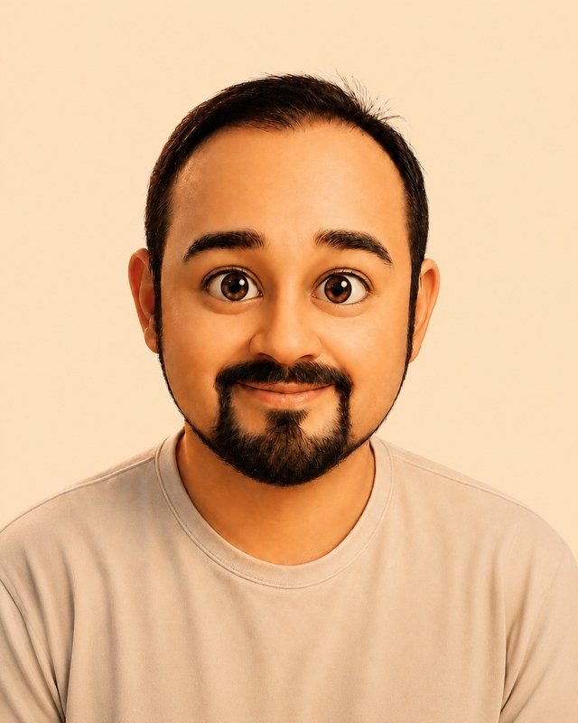
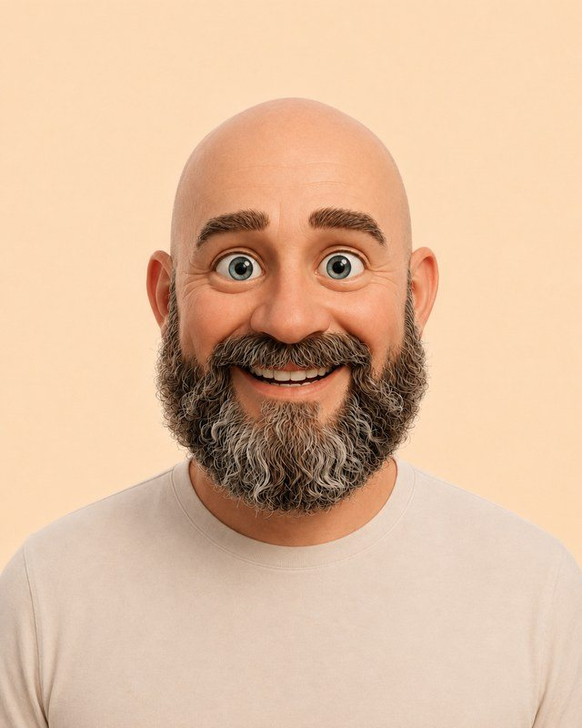
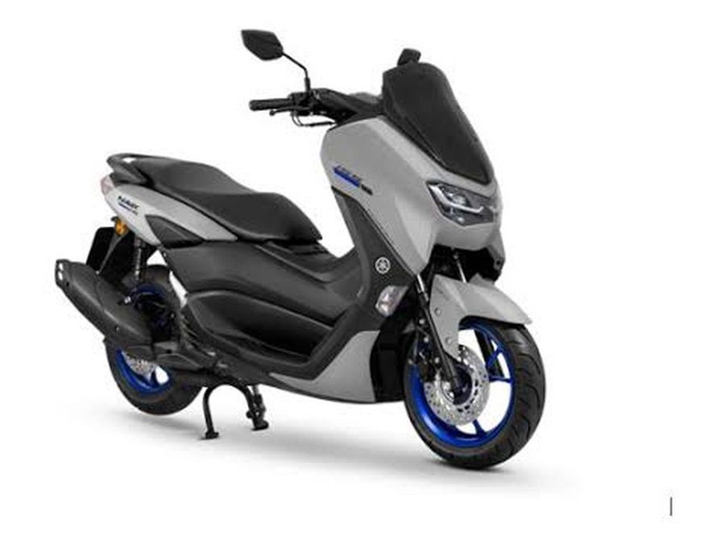
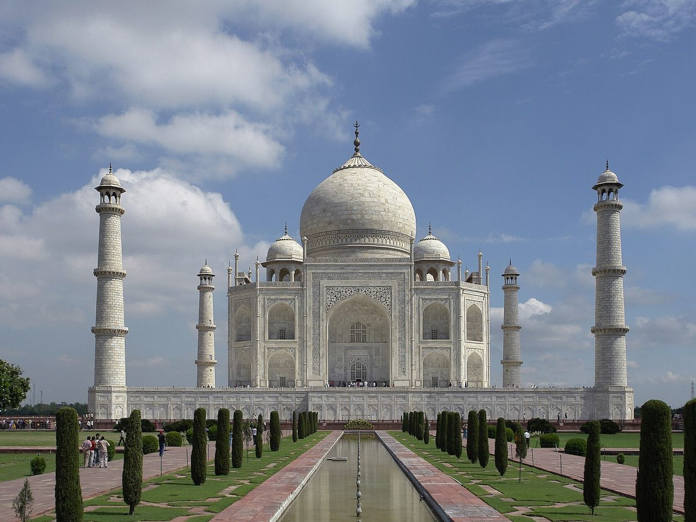
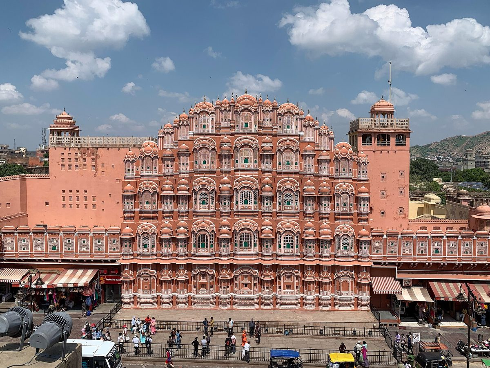
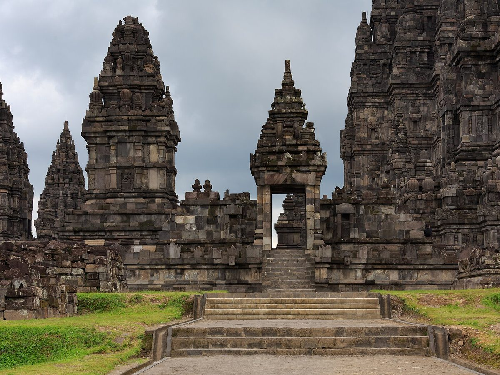
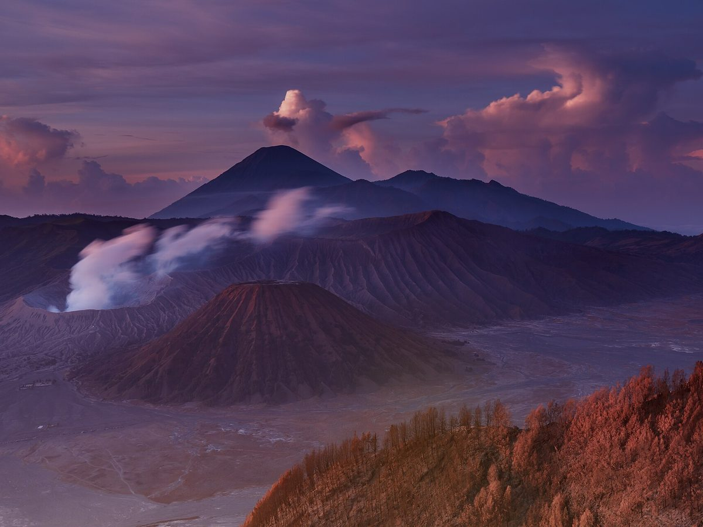
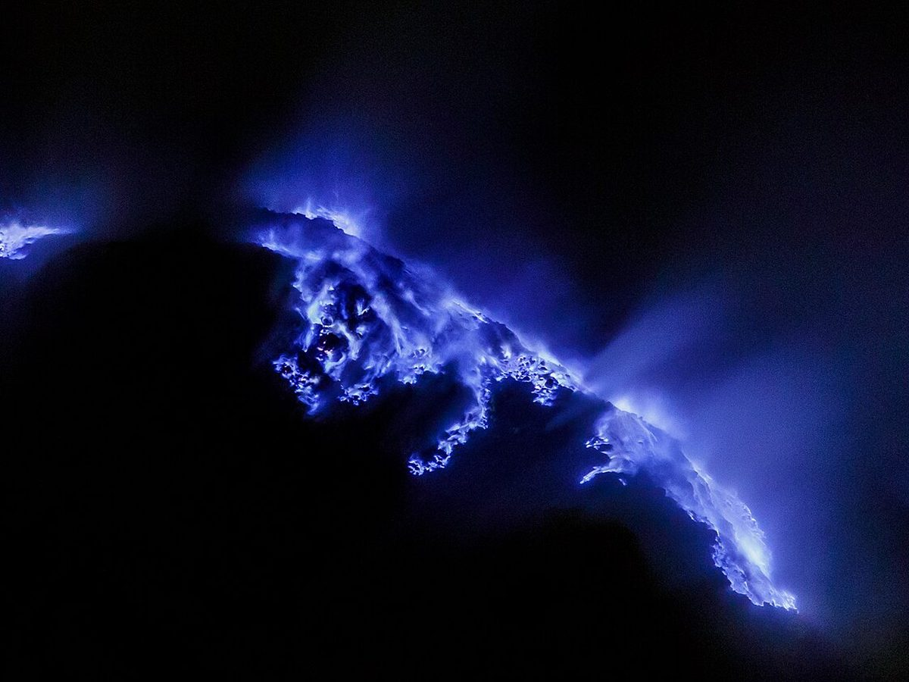
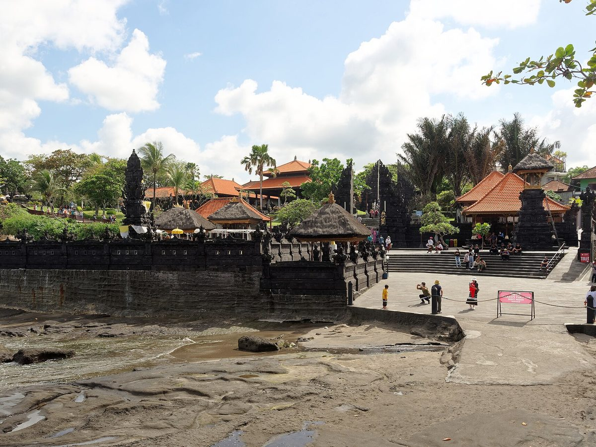

2
Countries
Three friends trade desks for saddles: the Golden Triangle of India — Delhi, Agra, Jaipur — then 1,430 km across Java on Yamaha NMax 155s, from Jakarta to Banyuwangi, two volcanoes on the way, and a ferry to Denpasar at the finish.
The Golden Triangle by road, a night flight east, then Java end to end: every stop on one map.
India first, on four wheels and trains. Then the long ride: Java end to end, west to east, one town at a time.









Photographs via Wikimedia Commons (CC BY-SA) — see attributions. Our own shots replace these during the ride.